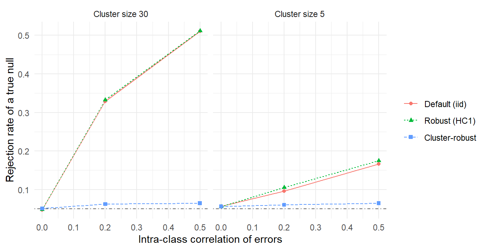
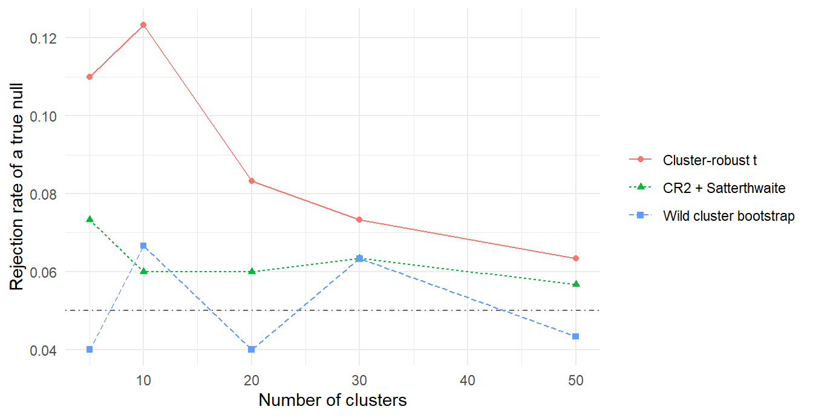

Chapter 58 Clustered and Robust Inference
Abstract. Standard errors are where a great many published findings quietly fail. This chapter opens with the empirical record, reviewing the audits that showed how much of the applied literature reported standard errors too small to support its conclusions, from the original assessment of difference-in-differences practice through audits of finance, accounting, and economics, and the multiple testing problem in the cross-section of returns. It then develops why within-cluster correlation shrinks conventional standard errors, how cluster-robust variance estimation corrects this, and what goes wrong when the researcher clusters at the wrong level. The few-cluster problem receives extended treatment, covering the wild cluster bootstrap and the refinements that keep inference reliable when clusters are scarce. Multi-way clustering, spatial and temporal dependence, and network and interference clustering follow. A decision guide separates design-based from sampling-based clustering and supplies a decision tree and a table organized by research design. Worked examples cover sandwich, clubSandwich, fwildclusterboot, summclust, and fixest.
Keywords: Cluster-robust standard errors; Within-cluster correlation; Few clusters; Wild cluster bootstrap; Multi-way clustering; Design-based inference
Most of the hard work in empirical research goes into the point estimate: choosing a design, defending an identifying assumption, picking the right estimator. Yet a point estimate on its own says nothing. It becomes a finding only once it is paired with a standard error, a confidence interval, and a \(p\)-value. This chapter is about getting that second half right.
The central message is simple. Ordinary least squares can deliver an unbiased, consistent point estimate even when the errors are correlated, but the default standard error reported by software assumes the errors are independent and identically distributed. When that assumption fails, the coefficient may still be fine while the standard error is badly wrong, usually too small. Confidence intervals are then too narrow, \(t\)-statistics too large, and true null hypotheses get rejected far more often than the nominal five percent.
The most common reason the iid assumption fails in applied work is clustering: observations fall into groups (students in schools, workers in firms, repeated observations on the same state) and the errors are correlated within a group. This chapter builds intuition for why clustering matters, shows through simulation what goes wrong when it is ignored or done at the wrong level, and ends with a practical guide to choosing the level to cluster on across the designs covered earlier in this book.
The treatment here follows three reference papers. Cameron and Miller (2015) is the established practitioner guide. MacKinnon et al. (2023a) updates it with the post-2015 literature on small-sample corrections, jackknife methods, and the wild cluster bootstrap. Abadie et al. (2020) and Abadie et al. (2023) clarify when clustering adjustments are actually needed by separating sampling-based from design-based uncertainty. Together they cover the conceptual foundations, the modern toolkit, and the design-based perspective that frames the practical decisions in the second half of this chapter.
58.1 Why This Matters: The Empirical Record
The methodological content of this chapter would be an academic exercise if applied work routinely got the standard errors right. A long line of audits and meta-studies in top journals has documented that it does not. The “clustering decision” sits squarely inside the small set of methodological choices that empirically have the largest impact on what reaches publication and what survives replication. The papers reviewed below set the stakes for everything that follows.
58.1.1 The Original Audit of Differences-in-Differences
Bertrand et al. (2004) is the foundational audit. They surveyed 92 DiD papers in top economics journals and noticed that almost none of them addressed the serial correlation of outcomes within a unit. They then ran a placebo experiment on real Current Population Survey data: assign a fictitious treatment at a random year to a random state, estimate the DiD, and ask how often the null hypothesis of zero treatment effect is rejected. With the conventional standard errors used by the surveyed papers, the rejection rate at the nominal five-percent level was approximately 45%. Roughly half of “significant” DiD findings in the surveyed literature would, on this evidence, have been false positives. Clustering the standard errors at the unit level brought the rejection rate close to nominal. The paper rewrote the practice of DiD inference and is the reason clustering by unit is now standard for panel-data treatment effects.
58.1.2 Auditing Finance and Accounting Panel Data
Petersen (2009) did the analogous audit for empirical finance. He surveyed 207 papers in the Journal of Finance, the Journal of Financial Economics, and the Review of Financial Studies, and catalogued the standard-error methods used: Fama-MacBeth, OLS with no correction, White’s heteroskedasticity-robust, Newey-West, and clustered. He then simulated panel data with both firm and time effects and showed the rejection-rate cost of each choice. Approaches that ignored one dimension of correlation produced under-estimated standard errors and rejection rates several times the nominal level. The paper made double-clustering by firm and year the default in modern empirical corporate finance.
Gow et al. (2010) is the direct accounting analogue. They survey the Journal of Accounting Research, the Journal of Accounting and Economics, and The Accounting Review, document the standard-error methods used in accounting panel work, and re-analyze published findings from the cost-of-equity, cost-of-debt, and accounting-conservatism literatures with corrections for both cross-sectional and time-series dependence. Several of those findings change when properly two-way-clustered. The paper plays the role in accounting that Petersen (2009) plays in finance.
Conley et al. (2018) updated and broadened the audit for accounting and finance, with attention to the kinds of dependence structures (firm, industry, time) that arise in panel data sets typical of those fields. It is the natural sequel to Petersen (2009) and Gow et al. (2010) and is now the practitioner reference cited alongside both originals.
58.1.3 How Methodological Choices Drive Findings
Mitton (2022) pushed the audit further by quantifying the researcher degrees of freedom in empirical corporate finance. He took typical leverage regressions and varied ten routine methodological decisions (the dependent-variable definition, variable transformations, outlier handling, the standard-error procedure, and others). Across the resulting specification universe, a researcher with the discretion to pick a “preferred” specification could report that more than seventy percent of randomly generated regressors were statistically significant at the five-percent level. The standard-error choice is one of those degrees of freedom, and changing it alone can flip a coefficient between significant and not.
Gormley and Matsa (2014) is the related audit on how empirical corporate finance handles unobserved heterogeneity. They show that the common practice of “industry-adjusting” the dependent variable, rather than including industry fixed effects with appropriately clustered standard errors, generates biased and unreliable inference. The paper has been cited so heavily in the field that subsequent corporate-finance papers now routinely defend their fixed-effects and clustering choices against the Gormley-Matsa benchmark.
58.1.4 The Cross-Section of Returns and Multiple Testing
Campbell R. Harvey et al. (2016a) compiled a catalog of 316 published factors claimed to predict the cross-section of equity returns and argued that, once a multiple-testing adjustment is applied to the \(t\)-statistic threshold, most of those factors fall below the bar. The implication is not that the underlying SE estimates were wrong (most were heteroskedasticity-robust or Newey-West) but that the interpretation of a \(t\)-statistic above two is far too generous when the literature has scanned through hundreds of candidate predictors. Harvey (2017) made this argument the centerpiece of his American Finance Association presidential address. The two papers together changed how empirical asset pricing reads any single published \(t\)-statistic.
58.1.5 Economics-Wide Audits
Brodeur et al. (2020) examined approximately 21,000 test statistics from 25 top economics journals, separated by causal-inference method (instrumental variables, regression discontinuity, randomized controlled trials, and difference-in-differences), and documented the characteristic two-humped \(p\)-curves of \(p\)-hacked literatures around the conventional \(0.05\) threshold. The inflation depends on the method used: IV is the most affected, RCT the least. The authors are explicit that standard-error choices are one of the levers researchers use to push borderline \(t\)-statistics across the significance line.
Young (2019) re-ran the inference for almost every randomized experiment published in the American Economic Association journals using Fisher randomization tests. A substantial share of nominally significant clustered or robust standard-error results did not survive randomization-based inference. The paper made randomization tests a near-default robustness check for any experiment with fewer than a few hundred treated units.
Ioannidis et al. (2017) performed a meta-analysis of 64,076 estimates from across the economics literature and reported median statistical power around 0.18. Underpowering, combined with selection-on-significance, produces inflated published effect sizes, and standard-error choices that make the apparent power look higher than it is compound the problem.
Christensen and Miguel (2018) is the Journal of Economic Literature synthesis of the broader transparency-and-credibility movement in economics. The review covers preregistration, replication, and specification flexibility, and devotes substantial attention to the role of standard-error choices in driving published-finding fragility.
Conley and Kelly (2025) is the most recent audit in this thread. It targets cross-country and persistence regressions that rely on slowly-varying spatial variables, shows via Monte Carlo that even conventional Conley HAC standard errors over-reject in such settings, and re-analyzes a sample of published persistence findings. A non-trivial share fails to survive the corrected inference. The paper is discussed further in Section 58.8.
58.1.6 Beyond Economics and Finance
The audit-of-practice literature extends to other empirical social sciences and to applied statistics, with each field producing its own analogue of Petersen 2009 and Bertrand-Duflo-Mullainathan 2004.
In political science, Esarey and Menger (2019) surveys how published quantitative work handles clustered data and benchmarks the asymptotic CR1 \(t\)-test, the wild cluster bootstrap, and random-effects alternatives. They document that conventional CR1 under-estimates standard errors when clusters are few, which is the rule rather than the exception in cross-country or cross-state political-science panels, and recommend the wild cluster bootstrap as the default robustness check for that literature.
In psychology and education, McNeish and Stapleton (2016) is the canonical tutorial-with-simulation aimed at researchers who fit multilevel models on five to thirty clusters, which is the typical scale in classroom or school randomized trials. They document which estimators (REML with Kenward-Roger or Satterthwaite degrees of freedom, CR2 cluster-robust SE, or fully Bayesian alternatives) actually deliver nominal coverage in that regime and which (the lme4 defaults) do not. McNeish et al. (2017) is the companion piece in Psychological Methods arguing that the field’s default of hierarchical linear modeling is often unnecessary, and that a single-level regression with cluster-robust standard errors would have been the more transparent choice.
In public health and clinical trials, the analogue is the systematic review of cluster-randomized trials. Wright et al. (2015) examines how published cluster RCTs handle covariate adjustment and standard-error correction and reports a marked gap between methodological guidance and actual practice. Eldridge et al. (2008) performs the broader systematic review across 300 cluster-RCTs and identifies widespread failure to account for clustering at the design stage (in sample-size calculations) as well as the analysis stage. Both papers are foundational for the CONSORT extension to cluster trials and are the public-health equivalents of the finance and accounting audits above.
58.1.7 How the Toolkit Evolved
The methodological history of cluster-robust inference can be read as a sequence of responses to these audits. White (1980) introduced heteroskedasticity-robust standard errors. Liang and Zeger (1986) and Arellano (1987) extended the idea to clustered linear and fixed-effects models in the 1980s. The 2000s saw multiway clustering (Petersen (2009); Cameron et al. (2011); Thompson (2011)), the wild cluster bootstrap (Cameron et al. (2008)), and the design-based reframing of when to cluster (Abadie et al. (2020); Abadie et al. (2023)). The 2010s and 2020s added small-sample corrections (Imbens and Kolesár (2016); Pustejovsky and Tipton (2018)), few-treated-cluster methods (MacKinnon and Webb (2018); Hagemann (2025a)), and fast jackknife/bootstrap variants (Djogbenou et al. (2019); MacKinnon et al. (2023b)). MacKinnon (2019) is the survey article that traces this arc, and it makes the case that the cumulative effect of these innovations has materially changed how applied econometrics reads a regression table.
58.1.8 What This Means for the Reader
Two things follow from the empirical record. First, the methodological choices discussed in the rest of this chapter have material consequences for whether a published finding is real. Second, those choices have been studied carefully enough that there is no longer an excuse for picking a standard-error procedure by habit or by what looked good in the most recent referee report. The simulations and worked examples below take the methods seriously because the audit literature has shown what happens when they are not.
58.2 The Inference Problem
Consider the linear model
\[ y_i = x_i' \beta + u_i . \]
OLS estimates \(\hat\beta\) by minimizing the sum of squared residuals. Its sampling variance is
\[ V(\hat\beta) = (X'X)^{-1} \, X' \, \Omega \, X \, (X'X)^{-1}, \]
where \(\Omega = V(u \mid X)\) is the variance-covariance matrix of the errors. Everything depends on what we are willing to assume about \(\Omega\).
- Under the classical assumption of homoskedastic, independent errors, \(\Omega = \sigma^2 I\), and the formula collapses to the familiar \(\hat\sigma^2 (X'X)^{-1}\). This is the default standard error.
- Under heteroskedasticity, \(\Omega\) is diagonal but the diagonal entries differ. The heteroskedasticity-robust (or “White”, or “HC”) estimator of White (1980) replaces \(\Omega\) with a diagonal matrix of squared residuals.
- Under clustering, \(\Omega\) is block-diagonal: zero across clusters, but with nonzero off-diagonal entries within each cluster. The cluster-robust estimator targets this case.
The point estimate \(\hat\beta\) does not depend on \(\Omega\) at all. It is the variance that does. So the practical question is never “is my coefficient biased by clustering” but “is my standard error too small because I assumed away within-cluster correlation.”
58.3 Why Within-Cluster Correlation Shrinks Standard Errors
The intuition is about information. When observations are independent, each new observation contributes a fresh, independent piece of information about \(\beta\). When observations within a cluster are positively correlated, a new observation in an already-sampled cluster is partly redundant: it tells us something we already partly knew. The sample looks like it has \(N\) independent observations, but the effective number of independent observations is closer to the number of clusters.
If we compute standard errors as though all \(N\) observations were independent, we credit ourselves with more information than we actually have. The result is a standard error that is too small.
This effect has a clean closed form when clusters are equal-sized, regressors are constant within a cluster, and the within-cluster error correlation is constant. The ratio of the true sampling variance to the variance the default formula reports is the Moulton factor (Moulton 1986, 1990):
\[ \frac{V_{\text{true}}(\hat\beta)}{V_{\text{OLS}}(\hat\beta)} = 1 + (n - 1)\,\rho , \]
where \(n\) is the number of observations per cluster and \(\rho\) is the intra-class correlation of the errors. The default standard error must be inflated by \(\sqrt{1 + (n-1)\rho}\) to be correct.
Two features of this formula are worth absorbing. First, the distortion grows with cluster size: with \(\rho = 0.1\) and \(n = 100\), the variance is understated by a factor of roughly eleven, so the standard error is understated by a factor of more than three. Even a small correlation produces a large error when clusters are large. Second, the distortion depends on the regressor too. The formula above assumes the regressor is constant within a cluster, the worst case. More generally, the cluster-robust variance exceeds the heteroskedasticity-robust variance by an amount that grows with three things (Cameron and Miller 2015):
- the within-cluster correlation of the regressor of interest,
- the within-cluster correlation of the errors, and
- the number of observations per cluster.
If either the regressor or the error is uncorrelated within a candidate grouping, clustering on that grouping changes little. This is the key to the decision guide later: clustering matters precisely when both the treatment variable and the error vary at the group level.
58.3.1 Simulation: The Cost of Ignoring Clustering
The cleanest way to see this is to simulate data where we know the truth and then check how often each standard error rejects a hypothesis that is true by construction. We generate data with a slope of exactly zero, test \(H_0: \beta = 0\) at the five percent level, and record the rejection rate over many replications. A correct standard error rejects about five percent of the time. A standard error that is too small rejects much more often.
library(sandwich)
library(lmtest)
# One Monte Carlo experiment: returns the rejection rate of a true null
# under three standard errors (default iid, HC1 robust, cluster-robust).
sim_cluster_se <- function(G, n_g, rho, reps = 2000, seed = 1) {
set.seed(seed)
N <- G * n_g
cl <- rep(seq_len(G), each = n_g)
rej <- matrix(NA_real_, reps, 3,
dimnames = list(NULL, c("iid", "robust_hc1", "cluster")))
for (r in seq_len(reps)) {
# error = cluster-level component a_g + idiosyncratic e
a <- rnorm(G, 0, sqrt(rho))[cl]
e <- rnorm(N, 0, sqrt(1 - rho))
u <- a + e
# regressor also carries a within-cluster component
x <- rnorm(G)[cl] + rnorm(N)
y <- u # true slope is exactly 0
m <- lm(y ~ x)
b <- coef(m)[["x"]]
se <- c(sqrt(vcov(m)["x", "x"]),
sqrt(vcovHC(m, type = "HC1")["x", "x"]),
sqrt(vcovCL(m, cluster = cl)["x", "x"]))
# cluster-robust t uses G - 1 degrees of freedom
cv <- c(qt(.975, N - 2), qt(.975, N - 2), qt(.975, G - 1))
rej[r, ] <- as.numeric(abs(b / se) > cv)
}
colMeans(rej)
}We run this across a grid of intra-class correlations and cluster sizes, holding the number of clusters fixed at 50.
grid1 <- expand.grid(rho = c(0, 0.2, 0.5), n_g = c(5, 30))
res1 <- t(mapply(function(rho, n_g)
sim_cluster_se(G = 50, n_g = n_g, rho = rho, reps = 2000),
grid1$rho, grid1$n_g))
res1 <- cbind(grid1, res1)
knitr::kable(res1, digits = 3,
col.names = c("Intra-class corr.", "Cluster size",
"Default (iid)", "Robust (HC1)", "Cluster-robust"),
caption = "Rejection rate of a true null hypothesis at the 5% level. A correct standard error rejects about 0.05 of the time.")| Intra-class corr. | Cluster size | Default (iid) | Robust (HC1) | Cluster-robust |
|---|---|---|---|---|
| 0.0 | 5 | 0.057 | 0.056 | 0.056 |
| 0.2 | 5 | 0.096 | 0.105 | 0.060 |
| 0.5 | 5 | 0.166 | 0.175 | 0.064 |
| 0.0 | 30 | 0.048 | 0.048 | 0.051 |
| 0.2 | 30 | 0.329 | 0.332 | 0.062 |
| 0.5 | 30 | 0.511 | 0.511 | 0.064 |
library(ggplot2)
library(tidyr)
plot1 <- res1 |>
pivot_longer(c(`iid`, `robust_hc1`, `cluster`),
names_to = "se_type", values_to = "rejection") |>
mutate(se_type = factor(se_type,
levels = c("iid", "robust_hc1", "cluster"),
labels = c("Default (iid)", "Robust (HC1)",
"Cluster-robust")),
cluster_size = paste("Cluster size", n_g))
ggplot(plot1, aes(rho, rejection, colour = se_type, linetype = se_type,
shape = se_type)) +
geom_hline(yintercept = 0.05, linetype = "dotdash", colour = "grey40") +
geom_line() +
geom_point() +
facet_wrap(~ cluster_size) +
labs(x = "Intra-class correlation of errors",
y = "Rejection rate of a true null",
colour = NULL, linetype = NULL, shape = NULL) +
theme_minimal()
Figure 58.1: Rejection rate of a true null by standard-error type. The default and heteroskedasticity-robust standard errors over-reject sharply once errors are correlated within larger clusters; the cluster-robust standard error stays near the nominal 5% line.
Table 58.1 and Figure 58.1 confirm that the pattern matches the Moulton formula. With no within-cluster correlation, all three standard errors reject about five percent of the time. As the correlation rises, the default and heteroskedasticity-robust standard errors reject far too often, and the problem is much worse for the larger clusters. The heteroskedasticity-robust standard error is no help here: it corrects for non-constant variance on the diagonal of \(\Omega\) but still ignores the off-diagonal within-cluster terms. Only the cluster-robust standard error keeps the rejection rate near the nominal level.
58.4 Cluster-Robust Variance Estimation
The cluster-robust variance estimator (CRVE) takes the sandwich formula and estimates the within-cluster blocks of \(\Omega\) directly from the data:
\[ \hat V_{\text{clu}}(\hat\beta) = (X'X)^{-1} \left( \sum_{g=1}^{G} X_g' \, \hat u_g \, \hat u_g' \, X_g \right) (X'X)^{-1}, \]
where \(g\) indexes the \(G\) clusters, \(X_g\) stacks the regressors for cluster \(g\), and \(\hat u_g\) is the vector of residuals for that cluster. The crucial point is that no model for the within-cluster correlation is assumed. The outer product \(\hat u_g \hat u_g'\) absorbs whatever correlation structure exists inside the cluster, as long as errors are uncorrelated across clusters.
This generality is not free. The CRVE is consistent as the number of clusters \(G\) grows, not as the number of observations \(N\) grows. Adding more observations to a fixed set of clusters does not fix a CRVE computed from too few clusters. This is the assumption that drives the few-cluster problem in Section 58.6.
The CRVE has a lineage worth knowing. White (1980) introduced the heteroskedasticity-robust special case. Liang and Zeger (1986) extended the idea to clustered linear and nonlinear models, and Arellano (1987) applied it to the fixed-effects estimator for panel data. Heteroskedasticity- and autocorrelation-consistent (HAC) standard errors (Newey and West 1986) address a related problem for time-series correlation. Clustering by the time unit is often a simpler and more transparent alternative when the panel is short.
Although the cluster-robust standard error is usually larger than the default, it is not always. It can come out smaller when the within-cluster error correlation is negative, when clustering has only a modest effect so the two estimators differ mostly by noise, or simply because the CRVE is itself a noisy estimate in finite samples. A common and conservative rule of thumb is to report the larger of the default and cluster-robust standard errors. A formal test for combining them is given in Yang et al. (2005).
58.5 Clustering at the Wrong Level
Knowing that clustering matters is only half the problem. The harder question is which grouping to cluster on. Real data are nested: a student sits inside a classroom inside a school inside a district. Clustering can be done at any of these levels, and the choice changes the standard error.
There are two ways to get it wrong, and they are not symmetric.
Clustering too finely, at a level below where the correlation actually lives, leaves correlation uncorrected. The standard error is still too small and the test still over-rejects. This is the same failure as not clustering at all, just less obvious.
Clustering too coarsely, at a level above where the correlation lives, is the safe direction for handling correlation. A coarser grouping still contains all the within-cluster correlation of any finer grouping nested inside it, so the CRVE remains valid. The cost is different: coarser clusters means fewer clusters, and a CRVE computed from few clusters is biased downward, which is the subject of Section 58.6.
58.5.1 Simulation: Clustering Too Finely
We build a three-level hierarchy. Individuals are nested in states, states in regions. The error correlation is generated entirely at the state level. We then cluster three ways: by individual (too fine), by state (correct), and by region (too coarse).
sim_wrong_level <- function(reps = 2000, seed = 3) {
set.seed(seed)
n_region <- 30
states_region <- 5
ind_state <- 20
n_state <- n_region * states_region
N <- n_state * ind_state
region <- rep(seq_len(n_region), each = states_region * ind_state)
state <- rep(seq_len(n_state), each = ind_state)
ind <- seq_len(N)
rej <- se_mean <- matrix(NA_real_, reps, 3,
dimnames = list(NULL, c("by_individual", "by_state", "by_region")))
for (r in seq_len(reps)) {
# true error correlation lives at the STATE level
y <- rnorm(n_state, 0, sqrt(0.5))[state] + rnorm(N, 0, sqrt(0.5))
x <- rnorm(n_state)[state] + rnorm(N) # regressor also clustered by state
m <- lm(y ~ x)
b <- coef(m)[["x"]]
se <- c(sqrt(vcovCL(m, cluster = ind)["x", "x"]),
sqrt(vcovCL(m, cluster = state)["x", "x"]),
sqrt(vcovCL(m, cluster = region)["x", "x"]))
cv <- c(qt(.975, N - 1), qt(.975, n_state - 1), qt(.975, n_region - 1))
rej[r, ] <- as.numeric(abs(b / se) > cv)
se_mean[r, ] <- se
}
rbind(`Rejection rate` = colMeans(rej),
`Mean standard error` = colMeans(se_mean))
}
res2 <- sim_wrong_level()
knitr::kable(res2, digits = 3,
col.names = c("Cluster by individual", "Cluster by state",
"Cluster by region"),
caption = "Errors are correlated at the state level. Clustering finer than the truth (by individual) over-rejects; clustering at or above the truth controls the rejection rate.")| Cluster by individual | Cluster by state | Cluster by region | |
|---|---|---|---|
| Rejection rate | 0.404 | 0.048 | 0.048 |
| Mean standard error | 0.013 | 0.031 | 0.030 |
Table 58.2 shows that clustering by individual, which is finer than the true state-level correlation, produces standard errors that are too small and a rejection rate well above five percent. Clustering by state, the correct level, controls the rejection rate. Clustering by region, one level too coarse, also controls the rejection rate here because each region contains every state nested within it and there are still thirty regions to average over. The lesson generalizes: when in doubt, cluster at the coarser level, because the danger of coarsening is not invalidity but the few-cluster problem we turn to next.
58.6 The Few-Cluster Problem
The CRVE is justified by an asymptotic argument in the number of clusters. When \(G\) is small, that argument is weak, and the CRVE is biased downward: it under-states the true variance, so tests over-reject even though clustering was done at the right level. The bias comes from estimating the within-cluster error blocks with residuals, which are mechanically too small, an effect that averages out only when there are many clusters.
How few is “few” has no universal answer. The literature variously warns about fewer than 20, 30, or 50 clusters depending on how balanced the clusters are and how the regressor is distributed (Cameron and Miller 2015). State-level policy studies, with their 50 or fewer clusters, sit uncomfortably inside this range.
The standard fix is the wild cluster bootstrap of Cameron et al. (2008). Instead of trusting the CRVE’s asymptotic distribution, it builds the distribution of the test statistic by resampling. The version that performs best imposes the null hypothesis when computing the residuals to be resampled, and flips the sign of every residual in a cluster together using a random \(\pm 1\) (Rademacher) weight. It performs well with as few as five or six clusters (Cameron et al. 2008), and refinements for unequal cluster sizes are given in MacKinnon and Webb (2017).
58.6.1 Simulation: Few Clusters and the Wild Cluster Bootstrap
We implement the restricted wild cluster bootstrap directly, both because it has no extra dependency and because writing it out makes the algorithm concrete.
# Restricted wild cluster bootstrap p-value for H0: slope on x = 0.
wcb_pvalue <- function(y, x, cl, B = 399) {
m_unrestricted <- lm(y ~ x)
t_obs <- coef(m_unrestricted)[["x"]] /
sqrt(vcovCL(m_unrestricted, cluster = cl)["x", "x"])
# restricted fit imposes the null: regress y on the intercept only
m_restricted <- lm(y ~ 1)
yhat <- fitted(m_restricted)
uhat <- resid(m_restricted)
gid <- match(cl, unique(cl))
G <- length(unique(cl))
t_star <- numeric(B)
for (b in seq_len(B)) {
w <- sample(c(-1, 1), G, replace = TRUE)[gid] # one weight per cluster
yb <- yhat + w * uhat
mb <- lm(yb ~ x)
t_star[b] <- coef(mb)[["x"]] /
sqrt(vcovCL(mb, cluster = cl)["x", "x"])
}
mean(abs(t_star) >= abs(t_obs))
}We then vary the number of clusters and compare three tests: the ordinary cluster-robust \(t\)-test against the \(t(G-1)\) critical value, the CR2 bias-reduced variance with Satterthwaite degrees of freedom of Bell-McCaffrey (Imbens and Kolesár 2016; Pustejovsky and Tipton 2018), and the restricted wild cluster bootstrap.
library(clubSandwich)
sim_few_clusters <- function(G, n_g = 30, rho = 0.5,
reps = 300, B = 399, seed = 2) {
set.seed(seed)
N <- G * n_g
cl <- rep(seq_len(G), each = n_g)
rej_t <- rej_cr2 <- rej_wcb <- numeric(reps)
for (r in seq_len(reps)) {
y <- rnorm(G, 0, sqrt(rho))[cl] + rnorm(N, 0, sqrt(1 - rho))
x <- rnorm(G)[cl] + rnorm(N)
d <- data.frame(y = y, x = x, cl = cl)
m <- lm(y ~ x, data = d)
# 1. Ordinary CR1 cluster-robust t against t(G-1)
t_cl <- coef(m)[["x"]] / sqrt(vcovCL(m, cluster = cl)["x", "x"])
rej_t[r] <- abs(t_cl) > qt(.975, G - 1)
# 2. CR2 with Satterthwaite degrees of freedom (clubSandwich)
ct <- coef_test(m, vcov = "CR2", cluster = d$cl,
coefs = "x", test = "Satterthwaite")
rej_cr2[r] <- ct$p_Satt < 0.05
# 3. Restricted wild cluster bootstrap (Rademacher)
rej_wcb[r] <- wcb_pvalue(y, x, cl, B = B) < 0.05
}
c(cluster_t = mean(rej_t),
CR2_Satt = mean(rej_cr2),
wild_boot = mean(rej_wcb))
}
g_values <- c(5, 10, 20, 30, 50)
res3 <- t(sapply(g_values, sim_few_clusters))
res3 <- data.frame(n_clusters = g_values, res3)
knitr::kable(res3, digits = 3,
col.names = c("Number of clusters", "Cluster-robust t",
"CR2 + Satterthwaite", "Wild cluster bootstrap"),
caption = "Rejection rate of a true null with few clusters. The ordinary cluster-robust t over-rejects sharply. CR2 with Satterthwaite degrees of freedom recovers most of the gap with no resampling; the wild cluster bootstrap is closest to nominal across all G.")| Number of clusters | Cluster-robust t | CR2 + Satterthwaite | Wild cluster bootstrap |
|---|---|---|---|
| 5 | 0.110 | 0.073 | 0.040 |
| 10 | 0.123 | 0.060 | 0.067 |
| 20 | 0.083 | 0.060 | 0.040 |
| 30 | 0.073 | 0.063 | 0.063 |
| 50 | 0.063 | 0.057 | 0.043 |
res3 |>
pivot_longer(c(cluster_t, CR2_Satt, wild_boot),
names_to = "method", values_to = "rejection") |>
mutate(method = factor(method,
c("cluster_t", "CR2_Satt", "wild_boot"),
c("Cluster-robust t", "CR2 + Satterthwaite",
"Wild cluster bootstrap"))) |>
ggplot(aes(n_clusters, rejection, colour = method, linetype = method,
shape = method)) +
geom_hline(yintercept = 0.05, linetype = "dotdash", colour = "grey40") +
geom_line() +
geom_point() +
labs(x = "Number of clusters", y = "Rejection rate of a true null",
colour = NULL, linetype = NULL, shape = NULL) +
theme_minimal()
Figure 58.2: Rejection rate of a true null against the number of clusters. CR1 cluster-robust is unreliable with few clusters; CR2 with Satterthwaite degrees of freedom is a large cheap improvement; the wild cluster bootstrap controls the rejection rate even at five clusters.
Table 58.3 and Figure 58.2 report what happens. With five or ten clusters the ordinary cluster-robust \(t\)-test rejects a true null far too often, even though clustering is at the correct level. CR2 with Satterthwaite degrees of freedom recovers most of the gap without any resampling, and the wild cluster bootstrap, justified asymptotically by Djogbenou et al. (2019), stays close to five percent throughout. The practical implication is direct: with fewer than 30 or so clusters, the asymptotic cluster-robust \(t\)-test cannot be trusted on its own.
58.6.2 Refinements for Few Clusters
The few-cluster problem has spawned a small literature of complementary remedies. The choice between them depends on how few “few” is, how balanced the cluster sizes are, and how concentrated the treatment is across clusters. MacKinnon et al. (2023a) gives the most current overview, superseding Cameron and Miller (2015) on the bootstrap and jackknife fronts.
The cheapest upgrade is the CR2 bias-reduced variance estimator of Bell-McCaffrey, popularized in economics by Imbens and Kolesár (2016) and generalized to fixed-effects models by Pustejovsky and Tipton (2018). CR2 inflates the cluster-residual outer products by a leverage factor that exactly corrects the bias of the conventional CR1 estimator under a working homoskedasticity assumption, and pairs the resulting variance with Satterthwaite degrees of freedom that adapt to unbalanced cluster sizes. The simulation above shows CR2 closing most of the gap to the wild cluster bootstrap with no resampling. The clubSandwich package implements CR2 (and a jackknife variant CR3) for lm, plm, and lme4 models.
A separate question is how few is “few.” Carter et al. (2017) show that the relevant quantity is not the raw cluster count \(G\) but an effective number \(G^{*}\) that depends on the variation of cluster sizes and on the concentration of the regressor of interest across clusters. In balanced cluster-randomized designs \(G^{*}\) is close to \(G\). In designs with heavily unbalanced cluster sizes, or where treatment is concentrated in a handful of clusters, \(G^{*}\) can be a small fraction of \(G\). The summclust package reports \(G^{*}\) alongside leverage diagnostics.
When treatment is concentrated in very few clusters, the failure mode is qualitatively different and the wild cluster bootstrap itself starts to fail. MacKinnon and Webb (2018) diagnose this case explicitly: a wild cluster bootstrap with a single treated cluster produces a degenerate distribution. The state-of-the-art remedies are Hagemann (2025a), who provides a randomization test for the single-treated-cluster case, and Canay et al. (2017), who develop randomization tests under approximate symmetry that justify the cluster-by-cluster \(t\)-statistic combination of Ibragimov and Müller (2010). Hagemann (2025b) extends permutation inference to finite numbers of heterogeneous clusters. Ferman and Pinto (2019) build a similar fix specifically for DiD with few treated groups and heteroskedasticity.
Randomization inference, more generally, has become the workhorse robustness check for experiments and quasi-experiments. Young (2019) re-runs the inference for the universe of randomized-experiment papers in the AEA journals using Fisher randomization tests and finds that a striking share of nominally significant clustered or robust standard-error results does not survive. The lesson is not that clustering is wrong but that clustered \(p\)-values near the conventional cutoff deserve a randomization-based sanity check.
Finally, jackknife variants of the cluster-robust variance have re-emerged as fast competitors to the bootstrap. MacKinnon et al. (2023b) show that a refined jackknife (CR3J) achieves size control comparable to the wild cluster bootstrap at a fraction of the runtime on large datasets, making it the practical choice when \(G\) is large enough for asymptotics but the dataset is too big for \(B \geq 999\) bootstrap replications. The summclust package implements it.
58.7 Multi-Way Clustering
So far the clusters have been nested: every individual belongs to exactly one state, every state to exactly one region. Many panels have a non-nested correlation structure instead. Firm outcomes are correlated over time within a firm, and they are also correlated across firms within a year through common shocks. Neither grouping is nested in the other.
One-way clustering can only absorb one of these dimensions. Cluster by firm and the within-year correlation is left uncorrected. Cluster by year and the within-firm correlation is left uncorrected. Either way the standard error is too small. The fix is multi-way clustering, which estimates a variance for each dimension and combines them by inclusion-exclusion.
Two-way clustering has an especially rich history in empirical finance, where panels of firm-by-year observations exhibit both serial correlation within a firm and contemporaneous correlation across firms within a year. Petersen (2009) compared the available approaches (Fama-MacBeth, Newey-West, double-clustering) on simulated finance data and demonstrated that double-clustering is the only approach that handles both dimensions simultaneously. Thompson (2011) derives the closed-form double-clustering variance independently, with a particularly clean exposition aimed at empirical researchers. The general theoretical treatment is Cameron et al. (2011), and Bester et al. (2011) shows that double-clustering, Conley HAC, and Driscoll-Kraay can all be viewed as special cases of a single cluster-covariance framework.
58.7.1 Simulation: Two-Way Clustering
We generate a panel where the error has both a unit component and a time component, so the errors are correlated within a unit across time and within a time period across units.
sim_two_way <- function(N_unit = 50, T_time = 30, reps = 2000, seed = 4) {
set.seed(seed)
N <- N_unit * T_time
unit <- rep(seq_len(N_unit), each = T_time)
time <- rep(seq_len(T_time), times = N_unit)
rej <- matrix(NA_real_, reps, 4,
dimnames = list(NULL, c("iid", "by_unit", "by_time", "two_way")))
for (r in seq_len(reps)) {
# error = unit component + time component + idiosyncratic
y <- rnorm(N_unit, 0, sqrt(1/3))[unit] +
rnorm(T_time, 0, sqrt(1/3))[time] +
rnorm(N, 0, sqrt(1/3))
x <- rnorm(N_unit)[unit] + rnorm(T_time)[time] + rnorm(N)
m <- lm(y ~ x)
b <- coef(m)[["x"]]
se <- c(sqrt(vcov(m)["x", "x"]),
sqrt(vcovCL(m, cluster = unit)["x", "x"]),
sqrt(vcovCL(m, cluster = time)["x", "x"]),
sqrt(vcovCL(m, cluster = data.frame(unit, time))["x", "x"]))
cv <- c(qt(.975, N - 2), qt(.975, N_unit - 1), qt(.975, T_time - 1),
qt(.975, min(N_unit, T_time) - 1))
rej[r, ] <- as.numeric(abs(b / se) > cv)
}
colMeans(rej)
}
res4 <- sim_two_way()
knitr::kable(t(data.frame(`Rejection rate` = res4, check.names = FALSE)),
digits = 3,
col.names = c("Default (iid)", "Cluster by unit",
"Cluster by time", "Two-way cluster"),
caption = "Errors are correlated within units and within time periods. One-way clustering corrects only one dimension and still over-rejects; two-way clustering controls the rejection rate.")| Default (iid) | Cluster by unit | Cluster by time | Two-way cluster | |
|---|---|---|---|---|
| Rejection rate | 0.504 | 0.196 | 0.122 | 0.052 |
Table 58.4 shows that both one-way clusterings are an improvement over the default, but each leaves one dimension of correlation uncorrected and still over-rejects. Only two-way clustering brings the rejection rate back near five percent. Note the cost: two-way clustering relies on both dimensions having enough clusters, since the effective degrees of freedom are governed by the smaller dimension. A panel with many firms but only eight years gets little protection from clustering on year, and the few-cluster problem of Section 58.6 applies to that dimension. MacKinnon et al. (2021) extend the wild cluster bootstrap to the multiway setting, which is the recommended fallback when one dimension is short.
58.8 Beyond Clusters: Spatial, Temporal, and Network Dependence
The cluster-robust variance estimator buys a great deal of generality by treating clusters as black boxes, but it pays a price: it requires the analyst to know where one cluster ends and the next begins. Many real correlation structures are smoother than that. Two units in the same state are dependent, and so are two units in neighboring states, just a little less so. A firm-year shock decays with distance rather than vanishing at a state border. Two related but distinct families of estimators relax the “either inside or outside the cluster” dichotomy.
The first family is spatial HAC, originating with Conley (1999) and refined in Conley and Molinari (2007) for the case where locations are measured with error. The idea generalizes the time-series HAC of Newey and West (1986) to two-dimensional space: the variance is built from a weighted sum of all pairwise outer products \(X_i' \hat u_i \hat u_j X_j\), where the weight \(K(d_{ij})\) is one for nearby pairs and decays to zero past a distance cutoff. Spatial HAC does not require the analyst to commit to a discrete cluster partition, which is its main advantage over CRVE in spatial settings. The price is that the cutoff is a tuning choice, and the estimator inherits the small-sample behavior of HAC: under-coverage when the cutoff is too small, noise when it is too large.
The second family handles panel data with cross-sectional and serial dependence simultaneously. The classical estimator is Driscoll and Kraay (1998), which applies a time-series HAC to cross-sectionally averaged moment conditions and is consistent as \(T \to \infty\) regardless of how \(N\) grows. Hansen (2007) provides the formal theory for the cluster-robust variance estimator when \(T\) is large rather than \(N\), which is the relevant case in macro and finance panels. Vogelsang (2012) unifies these results under a HAR (heteroskedasticity-and-autocorrelation-robust) framework that also accommodates spatial correlation in panel models with fixed effects. Bester et al. (2011) shows that all of these estimators, plus the multiway CRVE of Section 58.7, can be viewed as cluster-covariance estimators with different definitions of “cluster” (geographic neighborhood, time block, firm). Conley et al. (2018) is a practitioner-oriented guide aimed specifically at accounting and finance applications, complementing Petersen (2009).
A recent and important critique is Conley and Kelly (2025), who show that many cross-country and persistence regressions exhibit spurious spatial correlation that is not absorbed by Conley HAC at conventional cutoffs. The reason is that the regressor itself can be smooth enough in space that the relevant distance over which residuals are correlated exceeds the sample’s spatial extent. The lesson is not that Conley HAC is wrong but that the cutoff should be chosen to reflect the actual smoothness of the data, and that an additional structural assumption (or a randomization-style placebo on permuted locations) may be necessary in highly persistent spatial settings.
58.8.1 Simulation: Spurious Spatial Regression
The cleanest way to internalize the Conley and Kelly (2025) warning is to simulate it. We generate two independent spatially smoothed processes on a 20-by-20 grid (so \(N = 400\)). Each is a Gaussian convolution of white noise. We then regress one on the other, where the true coefficient is zero by construction, and check how often each standard error rejects the true null. We compare three estimators: default OLS, naive clustering at the level of 4-by-4 spatial blocks, and a uniform-kernel Conley HAC at a fixed distance cutoff.
# Spatially smoothed Gaussian noise on a (side x side) grid.
spatial_smooth <- function(side, kernel_sd) {
grid <- expand.grid(gx = seq_len(side), gy = seq_len(side))
D <- as.matrix(dist(grid))
W <- exp(-D^2 / (2 * kernel_sd^2))
W <- W / rowSums(W)
list(coords = grid, values = as.numeric(W %*% rnorm(nrow(grid))))
}
# Uniform-kernel Conley spatial HAC standard error for one slope.
conley_se <- function(model, coords, cutoff) {
X <- model.matrix(model)
u <- residuals(model)
XtX_inv <- solve(crossprod(X))
D <- as.matrix(dist(coords))
K <- (D <= cutoff) * 1 # uniform kernel
uX <- sweep(X, 1, u, `*`)
meat <- t(uX) %*% K %*% uX
sqrt(diag(XtX_inv %*% meat %*% XtX_inv))
}sim_spurious_spatial <- function(side = 20, reps = 400, kernel_sd = 2,
cutoff = 3, seed = 7) {
set.seed(seed)
N <- side^2
rej <- matrix(NA_real_, reps, 3,
dimnames = list(NULL, c("iid", "block_cluster", "conley")))
for (r in seq_len(reps)) {
sx <- spatial_smooth(side, kernel_sd)
sy <- spatial_smooth(side, kernel_sd)
coords <- sx$coords
d <- data.frame(x = sx$values, y = sy$values)
m <- lm(y ~ x, data = d)
b <- coef(m)[["x"]]
# 4x4 spatial blocks as "naive cluster"
block <- (coords$gx - 1) %/% 4 * 100 + (coords$gy - 1) %/% 4
se_iid <- sqrt(vcov(m)["x", "x"])
se_blk <- sqrt(vcovCL(m, cluster = block)["x", "x"])
se_con <- conley_se(m, coords, cutoff = cutoff)[["x"]]
cv <- c(qt(.975, N - 2),
qt(.975, length(unique(block)) - 1),
qt(.975, N - 2))
rej[r, ] <- as.numeric(abs(b / c(se_iid, se_blk, se_con)) > cv)
}
colMeans(rej)
}
res_spatial <- rbind(
`Cutoff 3` = sim_spurious_spatial(cutoff = 3),
`Cutoff 6` = sim_spurious_spatial(cutoff = 6)
)
knitr::kable(
res_spatial,
digits = 3,
col.names = c("Default (iid)", "Block cluster (4x4)", "Conley HAC"),
caption = "Spurious spatial regression. Two independent spatially smoothed processes regressed on each other (true beta = 0). The default standard error rejects at over 70%; block clustering under-corrects because correlation crosses block boundaries; Conley HAC reduces the over-rejection sharply but still under-corrects at a cutoff close to the smoothing kernel, illustrating the Conley and Kelly (2025) concern. A larger cutoff helps but adds noise to the estimator."
)| Default (iid) | Block cluster (4x4) | Conley HAC | |
|---|---|---|---|
| Cutoff 3 | 0.72 | 0.232 | 0.188 |
| Cutoff 6 | 0.72 | 0.232 | 0.200 |
Table 58.5 summarizes the rejection rates. With strong spatial autocorrelation in both variables, the default OLS standard error sees them as carrying \(N\) independent pieces of information when they really carry far fewer, and rejects a null that is true by construction at a wildly inflated rate. Block clustering at a 4-by-4 spatial partition helps but still under-corrects because the smoothing kernel reaches across block boundaries. Conley HAC reduces the rejection rate sharply, but at a cutoff close to the underlying smoothing scale it still over-rejects, and only a much larger cutoff brings the rejection rate close to nominal. This is exactly the Conley and Kelly (2025) concern. In real-world cross-country or persistence regressions the analyst has no externally credible estimate of the spatial scale, and a cutoff chosen too small can leave substantial spurious correlation in the residuals. Best-practice diagnostics are (i) report Conley HAC at several cutoffs and look for the smallest cutoff at which the standard errors stabilize, (ii) run a randomization placebo by permuting locations, and (iii) when feasible, impose explicit structure on the spatial process rather than relying on a non-parametric HAC alone.
R implementations of Conley HAC are available in the conleyreg package. Stata users have acreg (Colella et al. 2023), which extends the same logic to arbitrary correlation structures including networks.
58.9 Network and Interference Clustering
When units are connected by a network rather than nested in tidy clusters, the cluster-robust framework needs another generalization. The simplest formulation is exposure mapping, introduced by Aronow and Samii (2017): instead of asking which discrete cluster a unit belongs to, ask which other units’ treatments could plausibly affect this unit’s outcome. The exposure mapping partitions the joint treatment assignment space into a smaller set of “exposure states,” and the cluster-robust variance is computed using those states as the cluster. The framework is general enough to cover spillovers along a friendship network, contagion in a transportation network, or peer effects within a classroom.
Leung (2022) develops the asymptotic theory for approximate neighborhood interference: the assumption that a unit’s potential outcomes depend on its own treatment plus the treatments of units within a bounded network neighborhood. This delivers a CLT and consistency results under conditions on how fast the neighborhood “fades” with network distance, providing a principled answer to “how far should we cluster” in a network setting.
The closest generalization of the CRVE itself to networks is Leung (2023). He shows that a network cluster-robust variance estimator, computed by treating the residual outer products of all pairs at network distance below a chosen radius as one cluster, achieves valid inference under conditions analogous to the spatial-HAC ones. The Stata package acreg (Colella et al. 2023) implements distance-based and network-based variants of this estimator. In R, conleyreg extends Conley HAC to network-based metrics. Empirical work that runs regressions on network data without any such correction (for example, paper-citation networks or village-level social-network data) typically reports standard errors that are far too small. Leung (2023) is the methodologically rigorous fix.
A practical caveat: estimating the network itself is often the binding constraint. When the analyst observes the network with error, or treats a coarse proxy (such as physical distance) as the network, the network cluster-robust variance can still be invalid. Cross-checks include rerunning the estimator with progressively larger network radii to confirm the standard errors stabilize, and using randomization inference on permuted network labels as a placebo.
58.10 Choosing the Clustering Level: A Decision Guide
The simulations point to a single organizing principle, stated in Cameron and Miller (2015) and sharpened in Abadie et al. (2023): cluster at the level at which treatment is assigned and at which the errors are correlated. Clustering matters only when both the regressor of interest and the error vary at the group level. If treatment is assigned individually and there is no design-induced group correlation, clustering is unnecessary. If treatment is assigned to whole groups, failing to cluster at the assignment level is a genuine error.
Two guiding questions operationalize this:
- Correlation. Is there reason to believe both the treatment variable and the errors are correlated within a candidate grouping? If yes, cluster broadly enough to capture it. If either is plausibly uncorrelated within the group, clustering there changes little.
- Count. Does the candidate grouping leave enough clusters to make the CRVE reliable? Coarser is safer for capturing correlation but reduces the cluster count, and too few clusters reintroduces over-rejection.
These two pull in opposite directions and mirror the bias-variance tradeoff. There is no formal test for the optimal level. The consensus is to err toward the coarser, more aggregated level when feasible, while staying alert to the few-cluster problem. If the coarse level leaves too few clusters, pair it with the wild cluster bootstrap rather than retreating to a finer level (Cameron et al. 2008). When one grouping is fully nested inside another, cluster at the higher level for more conservative inference (Cameron et al. 2011).
58.10.1 Design-Based vs Sampling-Based Clustering
The deeper conceptual point behind that principle is due to Abadie et al. (2020), who formalize a distinction between sampling-based and design-based uncertainty in regression. Sampling-based uncertainty is the conventional view: we sampled \(N\) observations from a larger population, and the standard error reflects sampling variability in that draw. Design-based uncertainty treats the sample as fixed and reflects the randomness in which units got treated, exactly as in a Fisher randomization test. The cluster-robust standard error is justified under one or both of these stories depending on the design of the study, and clustering can be either necessary or unnecessary depending on which story is operative.
Abadie et al. (2023) make the practical implication explicit. If treatment is randomized at the group level (e.g., a state policy applied to all individuals in the state), both the sampling-based and design-based standard errors require clustering at that group level. If treatment is randomized at the individual level and the sample itself is not a cluster sample, the design-based standard error is just heteroskedasticity-robust. The conventional cluster-robust estimator can be conservative and adds noise. The presence of a group identifier in the data is not, on its own, a reason to cluster. The reason is the design.
A small simulation makes the point concrete. We generate cluster-correlated errors in both arms but vary how treatment is assigned: in one arm treatment is constant within a cluster (group-randomized), in the other it is independent across individuals.
sim_design_based <- function(G = 50, n_g = 30, reps = 1500, seed = 5) {
set.seed(seed)
N <- G * n_g
cl <- rep(seq_len(G), each = n_g)
rej_grp <- rej_ind <- matrix(NA_real_, reps, 3,
dimnames = list(NULL, c("iid", "robust_HC1", "cluster")))
for (r in seq_len(reps)) {
# error has within-cluster correlation; true beta = 0
u <- rnorm(G, 0, sqrt(0.5))[cl] + rnorm(N, 0, sqrt(0.5))
# arm A: cluster-randomized treatment (constant within cluster)
D_grp <- rbinom(G, 1, 0.5)[cl]
m_grp <- lm(u ~ D_grp)
# arm B: individually randomized treatment
D_ind <- rbinom(N, 1, 0.5)
m_ind <- lm(u ~ D_ind)
for (j in 1:2) {
m <- if (j == 1) m_grp else m_ind
v <- coef(m)[[2]]
se <- c(sqrt(vcov(m)[2, 2]),
sqrt(vcovHC(m, type = "HC1")[2, 2]),
sqrt(vcovCL(m, cluster = cl)[2, 2]))
cv <- c(qt(.975, N - 2), qt(.975, N - 2), qt(.975, G - 1))
r_j <- as.numeric(abs(v / se) > cv)
if (j == 1) rej_grp[r, ] <- r_j else rej_ind[r, ] <- r_j
}
}
rbind(`Cluster-randomized treatment` = colMeans(rej_grp),
`Individually randomized treatment` = colMeans(rej_ind))
}
res_db <- sim_design_based()
knitr::kable(res_db, digits = 3,
col.names = c("Default (iid)", "Robust (HC1)", "Cluster-robust"),
caption = "Rejection rate of a true null when within-cluster error correlation is fixed but the design varies. In the cluster-randomized arm only cluster-robust controls size; in the individually randomized arm all three estimators are valid and cluster-robust is over-conservative. Clustering is a property of the design, not of the error structure alone.")| Default (iid) | Robust (HC1) | Cluster-robust | |
|---|---|---|---|
| Cluster-randomized treatment | 0.621 | 0.624 | 0.043 |
| Individually randomized treatment | 0.051 | 0.051 | 0.047 |
Table 58.6 makes the contrast visible. The cluster-randomized arm reproduces the familiar finding: ignoring the cluster structure of the error leaves the default and HC standard errors badly under-sized. The individually randomized arm shows the Abadie et al. (2023) point: with within-cluster error correlation but no design-induced clustering, HC1 already delivers nominal size, and the cluster-robust standard error is valid but unnecessary. In larger or more imbalanced designs the cluster-robust estimator in this arm typically becomes mildly conservative. The practical message is that the presence of a state or firm variable in the data does not, on its own, dictate that we cluster on it.
58.10.2 Decision Tree
Figure 58.3 condenses the principle into a sequence of yes/no questions and points at the corresponding remedies. It is meant as a visual companion to the decision table that follows, not a replacement.
library(DiagrammeR)
grViz("
digraph cluster_decision {
graph [layout = dot, rankdir = TB, fontsize = 11];
node [shape = box, style = 'rounded,filled', fontname = 'Helvetica',
fillcolor = '#F0F4F8'];
edge [fontname = 'Helvetica', fontsize = 10];
q1 [label = 'Is treatment assigned\\nat the group level?'];
q2 [label = 'Is the sample a cluster\\nsample of a population?'];
q3 [label = 'How many clusters G?'];
q4 [label = 'Is the dependence\\nnon-nested\\n(e.g., firm and year)?'];
q5 [label = 'Is the dependence\\ncontinuous in space,\\ntime, or network?'];
a_grp [fillcolor = '#F2F2F2', color = '#333333', penwidth = 1, label = 'Cluster at the\\ngroup of assignment'];
a_smp [fillcolor = '#F2F2F2', color = '#333333', penwidth = 1, label = 'Cluster at the\\nsampling unit'];
a_hc [fillcolor = '#F2F2F2', color = '#333333', penwidth = 1, label = 'HC-robust likely\\nsufficient\\n(Abadie et al. 2023)'];
a_5 [fillcolor = '#BFBFBF', color = '#000000', penwidth = 2.5, label = 'Single- or few-cluster\\nmethods (Hagemann 2025;\\nCanay-Romano-Shaikh 2017)'];
a_30 [fillcolor = '#BFBFBF', color = '#000000', penwidth = 2.5, label = 'CR2 + Satterthwaite\\n(Imbens-Kolesar 2016)\\nor wild cluster bootstrap'];
a_50 [fillcolor = '#BFBFBF', color = '#000000', penwidth = 2.5, label = 'CR1 with t(G-1) critical;\\nWCB as sanity check'];
a_big [fillcolor = '#F2F2F2', color = '#333333', penwidth = 1, label = 'Standard CRVE;\\ncheck effective G\\n(Carter et al. 2017)'];
a_mw [fillcolor = '#F2F2F2', color = '#333333', penwidth = 1, label = 'Multiway clustering;\\nWCB if any dim is short\\n(MacKinnon et al. 2021)'];
a_one [fillcolor = '#F2F2F2', color = '#333333', penwidth = 1, label = 'One-way clustering at\\ncoarsest correlated level'];
a_con [fillcolor = '#7F7F7F', color = '#000000', style = 'rounded,filled,dashed', penwidth = 2, label = 'Conley spatial HAC\\n(Conley 1999)'];
a_dk [fillcolor = '#7F7F7F', color = '#000000', style = 'rounded,filled,dashed', penwidth = 2, label = 'Driscoll-Kraay or\\nHansen large-T CRVE'];
a_net [fillcolor = '#7F7F7F', color = '#000000', style = 'rounded,filled,dashed', penwidth = 2, label = 'Network cluster-robust\\n(Leung 2023)'];
q1 -> a_grp [label = 'Yes'];
q1 -> q2 [label = 'No'];
q2 -> a_smp [label = 'Yes'];
q2 -> a_hc [label = 'No'];
a_grp -> q3;
a_smp -> q3;
q3 -> a_5 [label = 'G < 5'];
q3 -> a_30 [label = '5 to 30'];
q3 -> a_50 [label = '30 to 50'];
q3 -> a_big [label = 'G > 50'];
a_big -> q4;
q4 -> a_mw [label = 'Yes'];
q4 -> q5 [label = 'No'];
q5 -> a_con [label = 'Spatial'];
q5 -> a_dk [label = 'Long-T panel'];
q5 -> a_net [label = 'Network'];
q5 -> a_one [label = 'Discrete clusters'];
}
", height = 600)Figure 58.3: A decision tree for choosing a standard-error strategy. Light nodes with a solid border are point answers, mid-tone nodes with a bold border are conditional on the cluster count G, and dark nodes with a dashed border route to the non-cluster generalizations covered earlier in the chapter.
58.10.3 Decision Table by Design
The table below maps the designs covered earlier in this book to a recommended clustering level. Use it as the precise lookup, and the tree above for the conceptual route.
| Design or data structure | Cluster on | Rationale |
|---|---|---|
| Cross-sectional data with group-assigned treatment | The group that received the treatment assignment | Treatment and errors both vary at the group level (Abadie et al. 2023) |
| Cross-sectional data, individually assigned treatment, no group structure | Clustering not needed, use heteroskedasticity-robust | No design-induced clustering (Abadie et al. 2020, 2023) |
| Panel or difference-in-differences | The unit (individual, firm, state) | Errors are serially correlated within a unit over time (Bertrand et al. 2004) |
| Panel with common time shocks across units | Two-way, by unit and by time | Non-nested correlation in both dimensions (Cameron et al. 2011; Petersen 2009; Thompson 2011) |
| Staggered-adoption difference-in-differences | The unit | Same serial-correlation logic, treatment timing varies but the unit is still the correlated group |
| Stacked difference-in-differences, units unique to one sub-experiment | The unit | Units do not recur, so the unit is the correlated group (Deshpande and Li 2019) |
| Stacked difference-in-differences, units reused across sub-experiments | Unit by sub-experiment interaction | A unit appears in several stacks, and the interaction is the correct correlated group (Cengiz et al. 2019) |
| Regression discontinuity | The unit, or mass points of the running variable if it is discrete | Repeated observations or discreteness induce within-group correlation |
| Instrumental variables | The level at which the instrument varies | Correlation is induced at the level of the exogenous variation |
| Shift-share instruments | At the level of the exogenous shocks, with recentering | The shock structure, not the exposure data, dictates the SE adjustment (Adao, Kolesár, et al. 2019; Borusyak et al. 2022) |
| Spatially correlated treatment | Conley HAC, or a grouping broad enough to span the spatial scale | Pairwise correlation that decays smoothly with distance (Conley 1999; Conley and Kelly 2025) |
| Long-T panel with cross-sectional dependence | Driscoll-Kraay or Hansen large-T CRVE | Both serial and cross-sectional correlation (Driscoll and Kraay 1998; Hansen 2007) |
| Network data with spillovers | Network cluster-robust via exposure mapping | Smooth dependence along network adjacency (Aronow and Samii 2017; Leung 2023) |
| Few treated clusters (G_treated \(\leq\) 2) | Randomization or single-cluster inference | WCB and CRVE both fail, use specialized tests (Hagemann 2025a; Canay et al. 2017; Ibragimov and Müller 2010) |
58.10.4 Notes on Specific Designs
A few entries in the table deserve a sentence more.
For difference-in-differences, Bertrand et al. (2004) is the canonical warning: outcomes within a unit are highly serially correlated over time, so treating the many time periods of a panel as independent observations badly understates the standard error of a policy effect. Roth et al. (2023) reviews the modern toolkit (staggered-adoption estimators, parallel-trends sensitivity, weighting diagnostics) and treats inference as a first-class concern throughout.
For stacked difference-in-differences, the subtlety is that the estimator builds a separate clean comparison (a “sub-experiment”) around each adoption cohort, and the same unit can serve as a control in several sub-experiments. When that happens, the unit appears multiple times in the stacked dataset, and the correlated group is the unit by sub-experiment combination (Cengiz et al. 2019). When the design is constructed so that each unit belongs to only one sub-experiment, clustering on the unit alone is correct (Deshpande and Li 2019).
For shift-share or Bartik instruments, the SE problem is different: the instrument \(Z_{lt} = \sum_k s_{lk} g_{kt}\) shares its sector-level shocks \(g_{kt}\) across all regions \(l\), inducing a correlation structure that no region-level clustering can fix. Adao, Kolesár, et al. (2019) derive the correct inference under sectoral-shock randomness, and Borusyak et al. (2022) develop a recentered-shock variant whose standard errors have a much simpler closed form. The dedicated treatment is in the shift-share instruments section. This chapter is the right place only to flag that “cluster at the region level” is the wrong default for shift-share designs.
For treatment assigned to groups (the row that opens the table), Abadie et al. (2020) and Abadie et al. (2023) make the important clarification that clustering is a property of the sampling and assignment design, not a mechanical reaction to the presence of groups in the data. If treatment was randomized at the group level, clustering at that level is required. If groups exist in the data but treatment varies within them and the sample is not itself clustered, clustering can be unnecessary and merely costs precision, as the design-based simulation above demonstrated.
58.11 Practical Recommendations
A short checklist for applied work:
- Identify the level at which treatment is assigned, and the levels at which errors are plausibly correlated. Cluster at the coarsest of these.
- When clusters are nested, cluster at the higher level.
- Count the clusters. With fewer than roughly 30, use CR2 with Satterthwaite degrees of freedom or the wild cluster bootstrap for inference rather than the asymptotic CR1 \(t\)-test. With fewer than 5, use single-cluster or randomization methods.
- With non-nested correlation in two dimensions, use two-way clustering and confirm that both dimensions have enough clusters. Otherwise fall back to the wild cluster bootstrap for the short dimension.
- With spatial or network dependence, prefer Conley HAC or network cluster-robust over a discrete cluster partition that does not match the underlying dependence structure.
- Report the larger of the default and cluster-robust standard errors when they differ, and report which one you used. A large gap between them is itself evidence that clustering matters.
- Clustering is a design decision, not a robustness check to be tried last. Decide the level before looking at how it moves the \(p\)-value.
58.12 Software: Worked Examples
Every method described in this chapter has a stable R implementation. This section walks through one worked example per package, all running against the same shared dataset so the reader can see how the same point estimate gets different standard errors and \(p\)-values under different methods. Each example uses the maintained CRAN version of the package. Versions cited in the table at the end of this section are the ones used to produce the output below.
58.12.1 Setup: a Shared Panel
We simulate a balanced panel of 40 firms observed for 25 years, with errors that are correlated within a firm (a firm-level random shock plus idiosyncratic noise) and a regressor that also has a firm-level component. The true slope is \(\beta = 0.3\).
suppressPackageStartupMessages({
library(sandwich)
library(lmtest)
library(clubSandwich)
library(fwildclusterboot)
library(summclust)
library(fixest)
})
set.seed(1)
G <- 40
clusdat <- data.frame(
firm = factor(rep(seq_len(G), each = 25)),
year = factor(rep(seq_len(25), times = G))
)
clusdat$x <- rnorm(G)[as.integer(clusdat$firm)] + rnorm(nrow(clusdat))
clusdat$y <- 0.3 * clusdat$x +
rnorm(G)[as.integer(clusdat$firm)] + rnorm(nrow(clusdat))
fit <- lm(y ~ x, data = clusdat)58.12.2 Heteroskedasticity-Robust and Cluster-Robust SE with sandwich
The sandwich package is the foundation of the R cluster-robust ecosystem and has been maintained continuously since 2004 (Zeileis et al. 2020). vcovHC gives heteroskedasticity-robust (“White” or “HC”) standard errors and vcovCL gives one- and two-way cluster-robust standard errors. Both are passed to lmtest::coeftest to produce a familiar coefficient table.
# Default (iid) SE
coeftest(fit)["x", ]
#> Estimate Std. Error t value Pr(>|t|)
#> 3.104833e-01 3.719748e-02 8.346890e+00 2.316790e-16
# HC1 heteroskedasticity-robust SE
coeftest(fit, vcov = vcovHC, type = "HC1")["x", ]
#> Estimate Std. Error t value Pr(>|t|)
#> 3.104833e-01 3.968066e-02 7.824549e+00 1.293595e-14
# One-way cluster-robust SE, clustered by firm
coeftest(fit, vcov = vcovCL, cluster = ~ firm)["x", ]
#> Estimate Std. Error t value Pr(>|t|)
#> 0.31048326 0.12052332 2.57612604 0.01013424
# Two-way cluster-robust SE, clustered by firm and year
coeftest(fit, vcov = vcovCL, cluster = ~ firm + year)["x", ]
#> Estimate Std. Error t value Pr(>|t|)
#> 0.310483262 0.119419641 2.599934635 0.009461886The default standard error is too small because it ignores the within-firm correlation of the errors. HC1 corrects only for heteroskedasticity and is similarly too small here. The cluster-robust standard error roughly triples the SE and shrinks the \(t\)-statistic from around 8 to around 2.5. The two-way version produces a similar SE because there is no strong year effect in this simulation.
58.12.3 CR2 with Satterthwaite Degrees of Freedom: clubSandwich
clubSandwich implements the bias-reduced CR2 variance of Pustejovsky and Tipton (2018) along with Satterthwaite degrees of freedom that adapt to imbalanced cluster sizes. It is the standard R implementation of small-sample cluster-robust inference (Imbens and Kolesár 2016).
coef_test(fit, vcov = "CR2", cluster = clusdat$firm,
coefs = "x", test = "Satterthwaite")
#> Alternative hypothesis: two-sided
#> Coef. Estimate SE Null value t-stat d.f. (Satt) p-val (Satt) Sig.
#> x 0.31 0.125 0 2.49 26.6 0.0193 *The Satterthwaite degrees of freedom (around 27 here, well below the 999 of the naive \(t\)-test) and the slightly larger SE deliver a more conservative inference than the asymptotic cluster-robust \(t\). With moderate cluster counts (5 to 30) CR2 should be the default rather than CR1.
58.12.4 Wild Cluster Bootstrap: fwildclusterboot
fwildclusterboot is the R port of David Roodman’s Stata boottest package (Roodman et al. 2019). It implements the restricted wild cluster bootstrap of Cameron et al. (2008) and is the package to reach for when the cluster count is small or the design has few treated clusters (MacKinnon and Webb 2018).
set.seed(2)
bt <- boottest(fit, param = "x", clustid = "firm",
B = 999, type = "rademacher")
bt
#> boottest.lm(object = fit, param = "x", B = 999, clustid = "firm",
#> type = "rademacher")
#>
#> p value: 0.041
#> confidence interval: 0.0114 0.5762
#> test statistic 2.5761The bootstrap \(p\)-value and confidence interval do not rely on the asymptotic distribution of the cluster-robust \(t\), which is why they perform well when the cluster count is below 30 even if the CR1 \(t\)-test would not. For multiway clustering with a short dimension, pass a two-element clustid.
58.12.5 Jackknife and Effective Number of Clusters: summclust
summclust is the implementation companion to MacKinnon et al. (2023b) and reports the CR3J jackknife variance, leverage diagnostics, and the effective number of clusters from Carter et al. (2017). The diagnostics are useful even when the goal is not to switch to the jackknife: a small effective \(G\), or a few clusters with very high leverage, are warning signs that asymptotic cluster-robust inference is unreliable.
# summclust dispatches on both lm and fixest fits; the fixest route is used here
# because it is the fitting workflow this chapter recommends for panel designs.
fit_fe <- feols(y ~ x, data = clusdat)
sc <- summclust(fit_fe, cluster = ~ firm, params = "x")
summary(sc)
#> summclust.fixest(obj = fit_fe, cluster = ~firm, params = "x")
#>
#> Number of observations: 25 25 25 25 25 25 25 25 25 25 25 25 25 25 25 25 25 25 25 25 25 25 25 25 25 25 25 25 25 25 25 25 25 25 25 25 25 25 25 25
#> Number of clusters: 7
#>
#> coef tstat se p_val conf_int_l conf_int_u
#> x 0.3104833 2.403432 0.1291833 0.0210951 0.04918537 0.5717812
#>
#> N_G leverage partial-leverage-x beta-x
#> Min. 25 0.03567568 0.01067568 0.27124594
#> 1st Qu. 25 0.04170518 0.01670518 0.30139512
#> Median 25 0.04376831 0.01876831 0.30806929
#> Mean 25 0.05000000 0.02500000 0.31059376
#> 3rd Qu. 25 0.05282497 0.02782497 0.31529024
#> Max. 25 0.11586017 0.09086017 0.40591407
#> coefvar 0 0.33711662 0.67423325 0.06744859The leverage and partial-leverage rows tell the analyst whether a single cluster is driving the result. The jackknife SE is the principled small-sample point estimate, and pairing it with the wild cluster bootstrap is the redundant-but-safe combination recommended by MacKinnon et al. (2023a) for designs with concentrated treatment.
58.12.6 Integrated Panel Estimation: fixest
fixest::feols is the workhorse panel-data estimator in modern applied econometrics. It absorbs high-dimensional fixed effects, computes one- or multi-way clustered standard errors in a single call, and produces publication-quality side-by-side tables via etable.
f_one <- feols(y ~ x, data = clusdat, cluster = ~ firm)
f_two <- feols(y ~ x, data = clusdat, cluster = ~ firm + year)
etable(f_one, f_two)
#> f_one f_two
#> Dependent Var.: y y
#>
#> Constant -0.0493 (0.1982) -0.0493 (0.1952)
#> x 0.3105* (0.1205) 0.3105* (0.1201)
#> _______________ ________________ ________________
#> S.E.: Clustered by: firm by: firm & year
#> Observations 1,000 1,000
#> R2 0.06525 0.06525
#> Adj. R2 0.06432 0.06432
#> ---
#> Signif. codes: 0 '***' 0.001 '**' 0.01 '*' 0.05 '.' 0.1 ' ' 1For panel designs with fixed effects, write feols(y ~ x | firm + year, data = clusdat, cluster = ~ firm). The | firm + year syntax absorbs both fixed effects efficiently. For stacked difference-in-differences with units reused across sub-experiments, cluster on ~ firm^sub_experiment.
58.12.7 Spatial and Network Standard Errors
For spatial designs, the R package conleyreg implements the Conley HAC estimator and its Bartlett-kernel variants. The Stata equivalent is acreg (Colella et al. 2023), which also handles arbitrary network-based correlation structures. A minimal Conley HAC implementation was already provided in Section 58.8.1. It is sufficient for a teaching example, but for production work the published packages handle distance computation, kernel choice, and panel extensions more robustly. Network cluster-robust standard errors of Leung (2023) are also available in acreg and in dedicated R implementations distributed via GitHub.
58.12.8 Function Inputs and Cross-Package Compatibility
The examples above all start from an lm fit because that is the lowest-common-denominator object. In practice readers will fit with fixest::feols, plm::plm, lfe::felm, lme4::lmer, ivreg::ivreg, or a glm, and the question becomes: which inference package will accept which model object, and in what format must the cluster variable be passed.
Two patterns matter. The first is what the function calls a “cluster”: some want a vector, some want a formula, some want a column-name string. The second is which model classes each function dispatches on. The two tables below cover both.
58.12.8.1 Cluster-spec format expected by each function
| Function | Accepted formats for the cluster argument | Example |
|---|---|---|
sandwich::vcovCL |
formula, vector, factor, or data.frame (for multiway) |
cluster = ~ firm, cluster = clusdat$firm, cluster = data.frame(unit, time) |
clubSandwich::coef_test / vcovCR |
vector or factor, not a formula | cluster = clusdat$firm |
fwildclusterboot::boottest |
string name of a column in the data passed to the fit | clustid = "firm" (or c("firm","year") for two-way) |
summclust::summclust |
formula evaluated in the fit’s data | cluster = ~ firm |
fixest::feols(..., cluster=) |
formula, supports interactions with ^ for stacked DiD |
cluster = ~ firm, cluster = ~ firm + year, cluster = ~ firm^sub_experiment |
A common bug: passing cluster = ~ firm to clubSandwich::coef_test. It expects a vector. Use cluster = clusdat$firm or cluster = model.frame(fit)$firm. The other direction (passing a vector where a formula is expected) usually works because the function falls back to vector dispatch, but the formula form is more robust because it re-resolves against the fit’s data.
58.12.8.2 Model classes each function accepts
The check marks below reflect the maintained CRAN versions used in this chapter. Where a package has partial support, that means the API works but with caveats (typically: cluster argument format differs, or certain methods like predict are not extended).
| Package / function | lm |
glm |
fixest::feols |
plm::plm |
lfe::felm |
lme4::lmer |
ivreg::ivreg |
|---|---|---|---|---|---|---|---|
sandwich::vcovCL / vcovHC |
yes | yes | partial (use fixest’s built-in) | yes | yes | partial | yes |
clubSandwich::coef_test |
yes | yes | no (use fixest or summclust) | yes | no | yes | no |
fwildclusterboot::boottest |
yes | no | yes | no | no | no | yes |
summclust::summclust |
yes | no | yes | no | no | no | no |
fixest built-in cluster= |
n/a | n/a | yes | n/a | n/a | n/a | n/a |
The practical decision rule from this matrix:
- If you fit with
lmorglm, every package above is available. This is why the examples in this chapter uselm: the samefitworks with all five inference packages. - If you fit with
fixest::feols(the recommended choice for panel and DiD work because of high-dimensional fixed effects), use fixest’s built-incluster=for routine work,fwildclusterboot::boottestfor the wild cluster bootstrap, andsummclustfor the jackknife and effective \(G\). - If you fit with
plm::plm(the classical panel-data package), usesandwich::vcovCLfor CR1 andclubSandwich::coef_testfor CR2. - If you fit with
lme4::lmer(mixed-effects),clubSandwichis the right call for CR2 with Satterthwaite df, and the others do not dispatch onlmerMod. - For
lfe::felm, usesandwich::vcovCL, sinceclubSandwichdoes not support it, andlfeitself has been superseded byfixestfor new work.
58.12.8.3 Cross-package consistency check
To make the compatibility tangible, the cell below refits the chapter’s example with fixest::feols and confirms that fixest’s built-in cluster-robust standard error and sandwich::vcovCL on the equivalent lm fit give the same number (up to a small-sample degrees-of-freedom adjustment).
fit_lm <- lm(y ~ x, data = clusdat)
fit_feols <- feols(y ~ x, data = clusdat, cluster = ~ firm)
# fixest's built-in cluster-robust SE
se_fixest <- se(fit_feols)[["x"]]
# sandwich's CR1 on the lm fit
se_sand <- sqrt(vcovCL(fit_lm, cluster = ~ firm)["x", "x"])
# clubSandwich's CR2 on the lm fit (more conservative in small samples)
se_cr2 <- coef_test(fit_lm, vcov = "CR2",
cluster = clusdat$firm, coefs = "x")$SE
data.frame(method = c("fixest CR1", "sandwich CR1 (lm)",
"clubSandwich CR2 (lm)"),
SE = c(se_fixest, se_sand, se_cr2))
#> method SE
#> 1 fixest CR1 0.1205233
#> 2 sandwich CR1 (lm) 0.1205233
#> 3 clubSandwich CR2 (lm) 0.1247175The fixest and sandwich numbers agree to all printed digits because both implement the same CR1 formula and apply the same finite-sample adjustment for an OLS regression. The clubSandwich CR2 number is slightly larger, as expected: CR2 inflates the variance to correct the finite-sample bias and trades a tiny amount of efficiency for size control.
58.12.8.4 What input each function ultimately needs
Across all of the packages above, the inputs reduce to three things:
- A fitted model object that exposes residuals, the model matrix, and (when applicable) sample weights through standard generics. Any of
lm,glm,feols,plm,lmer,ivregqualify. User-defined model classes do not unless they implementresiduals(),model.matrix(), andbread()(sandwich::bread) appropriately. - A grouping variable for the cluster, in the format the specific function wants. The grouping must be the same length as the data used to fit the model and aligned to its rows.
- The coefficient name to test (
coefs,param, orparams, depending on the package), and for bootstrap-based functions, a number of replications \(B\).
The reason sandwich is such a foundation is that its bread() and meat() generics let any well-behaved model class slot in. If you have a custom estimator, implementing those two methods is the minimum work to make every cluster-robust tool in the ecosystem usable on it.
58.12.9 Stable, State-of-the-Art Packages at a Glance
The table below summarizes the packages used above, with the CRAN-version maturity status and the situation each is the right call for. Versions are those used in this chapter, and all are on CRAN and actively maintained.
| Package | Version | Maintainer | Use this when… | Reference |
|---|---|---|---|---|
sandwich |
3.1.1 | Achim Zeileis (since 2004) | You need HC, HAC, or cluster-robust variance for any lm, glm, survreg model. The foundation, which nearly every other cluster-SE package builds on or interoperates with. |
Zeileis et al. (2020) |
lmtest |
0.9.40 | Hothorn et al. | Companion to sandwich, providing coeftest() for displaying test statistics with any custom variance matrix. |
Hothorn et al., CRAN |
clubSandwich |
0.6.1 | James Pustejovsky | The cluster count is moderate (5 to 30 or so) and you want CR2 with Satterthwaite degrees of freedom rather than the asymptotic CR1 \(t\). Also handles plm, lme4, lmer, robumeta. |
Pustejovsky and Tipton (2018) |
fwildclusterboot |
0.14.3 | Alexander Fischer | The cluster count is small (under 30), there are few treated clusters, or you want a non-asymptotic \(p\)-value as a sanity check. R port of Roodman’s Stata boottest. |
Roodman et al. (2019) |
summclust |
0.7.2 | MacKinnon, Nielsen, Webb | You want the CR3J jackknife, the Carter et al. (2017) effective number of clusters, or leverage diagnostics. The implementation companion to MacKinnon et al. (2023b). | MacKinnon et al. (2023b) |
fixest |
0.13.2 | Laurent Berg{'e} | You are estimating a panel or DiD model with one or more fixed-effects dimensions. The fastest high-dimensional FE estimator in R, with built-in one- and multi-way clustering with no extra package call. | Zeileis et al. (2020) (compatible) |
conleyreg (or acreg in Stata) |
not on every machine | Christian D{"u}ben, and Colella et al. for the Stata version | Spatial dependence with a distance metric, or arbitrary correlation along a network. | Colella et al. (2023) |
plm, lfe |
2.6.6, 3.1.1 | Croissant and Millo (plm), Gaure (lfe) |
Mature alternatives to fixest for panel-data fixed-effects estimation, and both interoperate with sandwich for cluster-robust SE. |
Croissant and Millo (2008) |
A reasonable default workflow for a new applied paper is: estimate with fixest::feols(... | <fixed effects>, cluster = ~ <design level>), report the cluster-robust SE, and pair it with a fwildclusterboot::boottest wild cluster bootstrap \(p\)-value as a sanity check. If the cluster count is below 30, also report the clubSandwich::coef_test(..., vcov = "CR2", test = "Satterthwaite") result. For spatial or network designs, swap in conleyreg (R) or acreg (Stata). The comprehensive practitioner overview is MacKinnon et al. (2023a).
58.13 Summary
Clustering is a problem of the standard error, not the point estimate. Within-cluster correlation means the sample carries less independent information than its raw size suggests, so a standard error computed under independence is too small and tests over-reject. The cluster-robust variance estimator corrects this without modeling the correlation structure, at the price of needing many clusters to be reliable, and the post-2015 toolkit has produced three families of refinements that make the asymptotic story workable in small samples: CR2 with Satterthwaite degrees of freedom for moderate \(G\), the wild cluster bootstrap and its multiway extension for the standard few-cluster setting, and randomization or single-cluster methods when treatment is concentrated in a handful of clusters.
The simulations in this chapter trace out the failure modes. Ignoring clustering, or clustering too finely, leaves correlation uncorrected and over-rejects. Clustering too coarsely is safe for correlation but can leave too few clusters, which over-rejects again through the small-sample bias of the CRVE. Non-nested correlation in two dimensions requires two-way clustering. Continuous dependence, in space, time, or networks, requires the generalizations covered in Section 58.8 and Section 58.9.
The unifying message is that clustering is a design choice. The deeper view of Abadie et al. (2020) and Abadie et al. (2023) is that the level to cluster on is dictated by where the randomness enters, the assignment mechanism for treatment and the sampling mechanism for the data. The presence of a group identifier in a dataset is not, on its own, a reason to cluster on it. Choose the level the design demands, err toward the coarser feasible one when the design is ambiguous, count the clusters before trusting the asymptotic test, and pair the conventional cluster-robust standard error with a CR2 or wild cluster bootstrap sanity check whenever the cluster count is moderate.